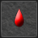
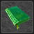
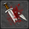

* Thank's
to PirateMike who had posted the informations until
lvl 200 on the FS Forum. *
A common question I see is
“what skills should I get”?
I hesitate to give definitive answers because the skills you should
get are dependant on your playing style.
Someone who loves to PvP will have a different set of skills than
those of a person who wants to simply level up.
So to help with making a decision that’s right for YOU,
I have decided to explain what the skills are in detail, and to
explain where I find them are useful.
Skills fall in three major categories:
When you start, the skill point cap is 100.
Every 50 levels after that, the cap raises 5 points.
So at level 50 your cap is 105, at level 100 the cap is 110,
and so on up to skill level 150 which you gain at character level
500.
Skill descriptions taken from the game are in black, quoted directly
from the game.
Notes in blue are
from the original post via Forum.
Cost is how many stamina points it costs
to cast this buff,
Duration is
given in minutes.
Offensive
skills:
Level
1:
Rage: [Cost 10, Duration 90]
+0.2% to base attack per point. This skill applies to everything
you attack.
Notice it says BASE
attack. It doesn’t apply to any guild or armor/weapon bonuses.
In my opinion, the bonus given by your equipment far outweighs
the 20% to your base attack this skill would give.
Top of Page
Stun: [Cost 15, Duration 90]
+0.1% chance per point to halve your opponents chance to hit.
Again, this is a multi-target
skill. This skill (at 100), give you a 10% chance to reduce your
opponent’s attack stat by half.
Not the base stat, but the whole shebang. At first look, this
looks appealing, but as you get in to the higher levels (lvl 50
+),
you are looking to one-hit kill your mobs, so it becomes a moot
point.
Top of Page
Level
25:
Fury: [Cost 10, Duration 90]
{10 point pre-requisite in Rage}
+0.1% base Attack and +0.1% base Damage per point.
An all around buff,
this skill again seems like a good deal. And it isn’t all
that bad.
Of all the ‘base stat’ skills, this isone of the more
useful.
Most players level up their attack and damage points while leaving
their armor, defense, and HP leveling alone.
But because it is a base bonus, it has a very limited usefulness.
Top of Page
Bloodthirst: [Cost 10, Duration 45]
{10 point pre-requisite in Rage}
+0.2% chance per point to drain 5% of your opponents current HP
per combat turn from your opponent.
This skill is only useful
in multiple rounds of combat, and you don’t receive that
HP that’s drained from your opponent.
Since we are trying to avoid multiple rounds of combat… Not
a worthy skill.
Top of Page
 Enchant Weapon:
[Cost
10, Duration
90]
Enchant Weapon:
[Cost
10, Duration
90]
+0.1% per point stat bonus increase to your equipped weapon (Excludes
'Gain' bonuses).
This is handy depending
on your weapon. If your weapon only has one stat bonus, okay.
But if your weapon has multiple stat bonuses, better. ‘Gain
bonuses’ refer to a + of gold, stamina, or exp hourly gain.
This is the first worthy skill in this category in my opinion.
Top of Page
Level
75:
Berserk: [Cost 15, Duration 90] {10 point
pre-requisite in Rage & Fury}
+0.2% base Damage per point.
Again, this is another
base stat bonus, probably more useful than Fury.
With a lot of players putting large amounts of level up points
in Damage, this can be very handy.
Top of Page
Holy
Flame: [Cost
15, Duration
90] {10 point pre-requisite in Enchant
Weapon}
+0.2% extra damage vs. undead per point.
This is the first creature-specific
skill.
Out of 393 creatures listed in FallenGuide, only 40 are classified
as undead as of 9/19/07. ‘Nuff said about that.
Top of Page
Level
150:
Dark Curse: [Cost 20, Duration 60]
{10 point pre-requisite in Rage, Fury & Berserk}
+0.2% reduction of opponents defense per point.
More useful at higher
levels than lower,
as this affects the opponent’s entire defense stat and 20%
of a mob with a defense of 12 is only 3 points (rounded up).
Top of Page
Level
200:
Shockwave:
[Cost
20, Duration
90]
+0.1% chance per point that your opponent will forfeit their next
combat turn.
I have heard higher-level
players say that one-hitting mobs is almost impossible at these
levels, so I imagine this skill could be useful.
Top of Page
Ignite:
[Cost
10, Duration
60]
+0.1% chance per point that your opponent will be set on fire.
Each successful hit thereafter will inflict between 5% and 10%
extra damage.
This is an automatic
damage booster.
Top of Page
Level 250:
Super
Elite Slayer: [Cost 25, Duration 15]
+0.2% per point reduction of damage, attack, defence and armor
to super elite creatures.
Top of Page
Wither:
[Cost
15, Duration
60]
+0.2% per point chance of a 50% reduction of your opponents HP
at the start of combat.
Top of Page
Level
300:
Shatter Armor: [Cost 20, Duration 60]
+0.05% per point chance to reduce opponents armor by 75%.
Top of Page
Death Wish: [Cost 20, Duration 45]
+0.03% per point chance to instantly kill vs. creatures. (Excludes
Super Elites)
Top of Page
Spell Breaker:
[Cost
35, Duration
45]
+0.1% per point chance to remove a random buff from PvP target
upon a successful attack.
Top of Page
Level
400:
Spectral Knight: [Cost 15, Duration 45] {10 point
pre-requisite in Shatter Armor}
+0.1% per point chance to reduce targets armor by 100%. (vs Creature
only)
Top of Page
Keen Edge: [Cost 10, Duration 60] {10 point pre-requisite in Death Wish}
+0.1% per point to your attack for each complete set equipped.
Top of Page
Level
500:
Arterial Strike: [Cost 20, Duration 60]
{10 point pre-requisite in Shatter Armor & Spectral
Knight}
Gain additional 0.1% xp per point for every additional round of
combat. (Note that this does not activate if conserve activated)
Top of Page
Death Dealer: [Cost 20, Duration 60]
{25 point pre-requisite in Death Wish & Keen Edge}
For every 5 kills in a row, without dying, you gain +0.01% extra
damage per point (Max 20% and vs. creatures only).
Top of Page
Level
600:
Savagery:
[Cost 15,
Duration 45] {10 point pre-requisite in Death Wish, Keen
Edge & Death Dealer}
0.05% chance per point that your defense stat is added to your
attack and your armor stat is added to your damage.
Top of Page
Level
700:
 Chili Strike: [Cost 20, Duration 90] {10 point
pre-requisite in Death Wish, Keen Edge, Death Dealer & Savagery}
Chili Strike: [Cost 20, Duration 90] {10 point
pre-requisite in Death Wish, Keen Edge, Death Dealer & Savagery}
0.1% per point of your Health total is added to your damage
Top of Page
Shield
Strike: [Cost 20, Duration 45]
{10 point pre-requisite in Death Wish, Keen Edge, Death
Dealer & Savagery}
0.1% per point chance that your defense stat is reduced to zero
and your damage is doubled.
Top of Page
Level
800:
Demoralize: [Cost 25, Duration 30]
+0.25% per point chance to half the opponents enchancement levels
for the battle. Note this skill only takes effect if you initiated
the combat.
Top of Page
Poison: [Cost 20, Duration 45]
+0.1% per point chance that your opponent will be poisoned. Each
successful hit thereafter will inflict between 10% and 20% extra
damage.
Top of Page
Level
900:
Iron Fist: [Cost 25, Duration 60]
++0.1% per point stat bonus increase to your equipped gloves.
(Excludes 'Gain' bonuses).
Top of Page
Spell
Leech: [Cost 50, Duration 65]
+0.1% per point chance when you defeat an opponent in PvP that
you initiated, you will steal a random buff. Note the remaining
duration of the buff is reduced by 50% and will not take effect
until the next combat. Note also if you already have the buff
active, it will replace the existing buff you have active.
Top of Page
Distraction: [Cost 25, Duration 60]
+0.2% per point chance to obtain no gold from a successful combat.
+0.05% per point chance to inflict double damage in each round
of combat. Note this skill has no effect in PvP.
Top of Page
Defensive
Skills:
Level
1:
 Great
Vigor: [Cost
10, Duration
90]
Great
Vigor: [Cost
10, Duration
90]
+0.2% base HP per point.
I know too many players
that never put any level up points into HP, so I would skip this
one.
Top of Page
Level
25:
Fortify:
[Cost 10,
Duration 120]
+0.1% base Armor per point.
In my opinion, another
useless skill as there isn’t an opportunity for your defense
to come into play if you are one-hitting the mob.
Top of Page
Evade:
[Cost
10,
Duration 90]
+0.1% base Defense per point.
See Fortify.
Top of Page
Absorb: [Cost 20, Duration 120]
+0.1% chance per point that you will absorb 25% of the damage
inflicted on you.
Ok, at level 100, that’s
10% chance you are going to absorb 25% of the damage IF the mob
hits you.
Top of Page
Level
75:
Rock Skin:
[Cost 15,
Duration 90] {10 point pre-requisite in Fortify}
+0.1% base Defense and +0.1 base Armor per point.
Limited by the ‘base’
side of this skill, this buff has very limited usefulness.
Top of Page
Enchanted
Armor: [Cost
10, Duration
90] {10 point pre-requisite in Absorb}
+0.1% per point stat bonus increase to your equipped armor. (Excludes
'Gain' bonuses).
This is a useful boost,
as not everyone can afford the “prime” equipment and
the bonus applies to the armor, not the base stat.
Top of Page
Level
150:
Aura of Protection: [Cost 20, Duration 90]
+0.1% base Defense, +0.1% base Armor and +0.1% base HP per point.
Of the base stat defense
buffs, this is the one to get if you want one. But that is based
entirely on that it boosts 3 stats.
Top of Page
Deflect: [Cost 25, Duration 300]
+0.25% chance per point that a player attacking you will automatically
fail before combat starts.
This is a PvP-only skill,
with very little usefulness.
Attackers automatically gain the first attack which would make
it useful, but for the buff length.
5 hours is longer than most players log off, and at the level
you gain this buff most players don’t PvP.
If they ever extend the duration of this buff to 12 or 24 hours,
it would be worthy.
Top of Page
Level
200:
Force Shield: [Cost 10, Duration 60]
+0.1% chance to reduce damage done to you to 1.
Another nice skill,
as it applies to not only PvM but also to PvP combat. Useful if
you are in a pinch for armor defense.
Top of Page
 Unbreakable:
[Cost
20, Duration
90]
Unbreakable:
[Cost
20, Duration
90]
+0.5% chance per point of equipment not taking durability loss
during combat.
If you want to save
a few pennies on repairing your armor, this is the buff for you.
It’s a good buff, but there are more pressing buffs to get.
Top of Page
Level
250:
 Assist: [Cost 30, Duration 120]
Assist: [Cost 30, Duration 120]
+0.05% per point chance of one of your allies assisting in combat
vs. creatures.
(Ally is randomly selected and adds 50% of their attack, defense,
damage, armor and hp - note this also excludes allies whom are
more than 25 levels above you.)
Top of Page
Level
300:
Constitution: [Cost 25, Duration 30]
+0.1% per point increase to your defense.
Top of Page
Level
400:
Counter Attack: [Cost 20, Duration 60]
Uses 0.25% extra stamina (per point) to add 0.25% to both attack
and damage. (Both values are rounded up, vs. creature only)
Top of Page
Summon
Shield Imp: [Cost 50, Duration 60] {25 point
pre-requisite in Constitution}
Creates an Imp which can absorb 100% of damage. Each full absorb
uses one of the Shield Imp's hit points.
The Shield Imp starts with 3 hit points and gains one for each
50 points placed in this skill. T
he Shield Imp auto-debuffs when it reaches zero hit points.
(Note Super-Elites can crush the imp in a single turn regardless
of hit points remaining and it only works in PvE.
Top of Page
Level
500:
Vision: [Cost 20, Duration 90]
Lights up dark realms. More skill points allow more vision on
the 'Map' screen.
Vision radius increases every 50 levels
Top of Page
Fortitude: [Cost 15, Duration 90]
{10 point pre-requisite in Constitution & Summon Shield
Imp}
Defense stat is added to HP. (0.1% per point)
Top of Page
Level
600:
Flinch: [Cost 20, Duration 60]
0.1% per point decrease in enemies Attack stat
Top of Page
Level
700:
Terrorize:
[Cost 20,
Duration 60] {10 point pre-requisite in Flinch}
0.1% per point decrease in enemies Damage stat
Top of Page
Nightmare
Visage: [Cost
15, Duration
90] {10 point pre-requisite in Constitution,
Summon Shield Imp & Fortitude}
0.25% per point of your Attack will be transferred into
Defense. (Great for offline protection!)
Top of Page
Level
800:
Honor: [Cost 10, Duration 180]
+0.2% per point decrease to the PvP Rating points transferred
upon defeat.
Top of Page
Sanctuary: [Cost 25, Duration 30]+0.1% per point increase to your armor.
Top of Page
Dull
Edge: [Cost
10, Duration
60] +0.4% per point reduction to creatures
'Piercing Strike' enhancement.
Top of Page
Level
900:
Erosion:
[Cost 25,
Duration 180]
+0.1% per point chance to reduce an attackers item durability
to 1 if durability damage is inflicted. Note this skill only works
in PvP and if you are defending.
Top of Page
Avert
Gaze: [Cost
10, Duration
60]+0.5% per point chance of not being
affected by Hypnotize.
Top of Page
 Enchant
Shield: [Cost
25, Duration
60]+0.1% per point stat bonus increase
to your equipped shield. (Excludes 'Gain' bonuses).
Enchant
Shield: [Cost
25, Duration
60]+0.1% per point stat bonus increase
to your equipped shield. (Excludes 'Gain' bonuses).
Top of Page
Special Skills
Level
1:
Find Item:
[Cost
10, Duration
60]
+0.1% per point increase of creatures current drop rate.
This is primarily useful
when hunting for a specific item. Also very handy during legendary
events.
Top of Page
Treasure Hunter:
[Cost
15, Duration
120]
+0.2% per point additional gold from creatures.
This is a good skill,
as it is an automatic increase in the amount of gold gained.
Top of Page
Deep Pockets: [Cost 10, Duration 90]
+0.25% per point reduction in gold lost on failed combat vs. creatures.
This is almost a defensive
skill, useful if you are having a rough time one-hitting the mobs.
Top of Page
Quest Finder:
[Cost
5, Duration
90]
Increases the chance a quest item will
drop.
(If you fail to obtain an item, an extra roll is given for Quest
Finder at a fixed percentage based on the points allocated to
the skill.
If this second roll is successful, you will obtain one of the
available quest items drops (if any)).
Top of Page
Level
25:
Adept Learner: [Cost 10, Duration 90]
+0.2% per point increase in xp from creature kills.
This is the first “must
have” skill for leveling, giving you an automatic boost in
exp gained.
It would be wise to save for this skill to have the second you
make lvl 25.
Top of Page
Defiance:
[Cost
15, Duration
120]
+0.25% per point reduction in xp lost when defeated in combat
vs. creatures.
See Deep Pockets (above).
Top of Page
Level
75:
Librarian:
[Cost 10,
Duration 60]
+0.1% per point chance to gain double xp from creatures.
Another skill that’s
good for leveling. It isn’t an automatic boost to exp gained,
but it does hit. Top of Page
Merchant: [Cost 10, Duration 60]
+0.05% per point chance to gain double gold from creatures.
This is the “gold
gain” version of Librarian.
Top of Page
Level
150:
Last Ditch:
[Cost 15,
Duration 120]
+0.2% per point chance to survive death in combat (once per combat).
I doubt this skill would
be very useful even at level 115. Your equipment should be keeping
you ‘alive’ even if you aren’t one-hitting.
Top of Page
Level
200:
Animal Magnetism: [Cost 10, Duration 60]
+0.2% per point chance to make certain creatures re-spawn at your
location.
This skill is useful
for areas where the mobs are sparse and requires a lot of walking
to find them. Only re-spawns mob types you kill.
Top of Page
Empower: [Cost 20, Duration 60]
+0.1% per point increase to all currently active enhancements.
Enhancements are those
things on the right side of the item description box &
total enhancements are listed on the left side of your main character
page.
This is the only buff that impacts your enhancements.
Top of Page
Doubler: [Cost 5, Duration 120]
At skill level 50+, 2x Stamina usage in combat in return for 2x
gold/xp.
At level 100+ 3x, and at level 150+ 4x. Note that stamina, gold,
and xp losses are normal (not multiplied) if you lose a battle.
This is a good skill for areas with low monster content, especially
coupled with Animal Magnetism.
Top of Page
Level
250:
Conserve: [Cost 10, Duration 45]
+0.05% per point chance that combat (vs. players and vs. creatures)
will use no stamina.
(Excludes group/relic combat)
Top of Page
Brewing
Master: [Cost
10,
Duration 30]
+0.5% per point to the duration of potions when consumed while
active.
Top of Page
Four
Leaf: [Cost
20,
Duration 60]
+0.1% per point chance that craftable items are discovered already
'Perfect'.
Top of Page
Level
300:
Extend: [Cost 10, Duration 45]
+0.25% per point increase to skills durations that are cast while
this skill is active.
Top of Page
Level
400:
Inventor: [Cost 15, Duration 60]
Increases chance of success when attempting to Invent items/potions.
(A fixed +0.05% chance per point extra chance of success)
Top of Page
Extractor:
[Cost
15,
Duration 60]
Increases chance of success when attempting to extract Components
from Resources.
(A fixed +0.05% chance per point extra chance of success).
Top of Page
Level
500:
 Inventor II: [Cost 20, Duration 60]
{10 point pre-requisite in Inventor}
Inventor II: [Cost 20, Duration 60]
{10 point pre-requisite in Inventor}
Chance not to consume (or consume less) components when inventing
items.
Top of Page
Buff
Master: [Cost
10,
Duration 60] {10 point pre-requisite
in Brewing Master}
0.2% per point chance to half the stamina cost (rounding up) when
casting skills on other players. (Does not work on self!)
Top of Page
Level
600:
Reflection: [Cost 10, Duration 90]
0.1% per point of enemies damage inflicted is added to your next
combat strike.
Top of Page
Level
700:
Light Foot: [Cost 15, Duration 120]
{10 point pre-requisite in Conserve}
0.05% chance to use no stamina while moving on the world map.
Top of Page
Mesmerize: [Cost 20, Duration 60] {10 point pre-requisite in Reflection}
0.1% per point chance to reduce a creatures armor and defense
by 50% (vs. creature only)
Top of Page
Level
800:
Resource Finder: [Cost 25, Duration 90]
Increases the chance a resource item will drop. (If you fail to
obtain an item, an extra roll is given for Resource Finder at
a fixed percentage based on the points allocated to the skill.
If this second roll is successful, you will obtain one of the
available resource items drops (if any)). Note if you have Quest
Finder active as well, this roll takes place after Quest Finder
and only if Quest Finder fails to obtain an item.
Top of Page
Level
900:
Gloat: [Cost 25, Duration 60]
+0.5% per point increase to the PvP Rating points transferred
upon victory. Note if you lose to a player who has the Honor skill
active, you will lose and additional 50% PvP Rating.Top of Page
Sacrifice: [Cost 25, Duration 90]
+0.02% per point additional xp and -0.25% per point less gold
for defeating creatures in combat.
Top of Page
 Reckoning: [Cost 25, Duration 60]
Reckoning: [Cost 25, Duration 60]
+0.2% per point chance of doubling a random skill level for the
battle if you initiate the combat (Note that this skill does not
work with Doubler, Summon Shield Imp or Counter Attack.).)
Top of Page
A few Notes:
-- Definitions:
PvM:
Player vs. Monster
PvP:
Player vs. Player
Mob(s):
Shorthand for monster. Origin can be disputed.
-- Avoid “base” stat buffs.
They are limited in their usefulness, especially as most people
tend to concentrate level up points on Attack and Damage.
-- Skills for gains in exp and gold are very
popular and rightly so.
-- Sustain is an enhancement that will lengthen
the time the buff stays active, up to doubling the length the
time.
If you are shopping for buffs to buy from another player, look
at the amount of sustain that the seller has.